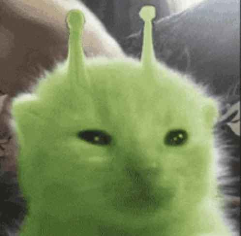
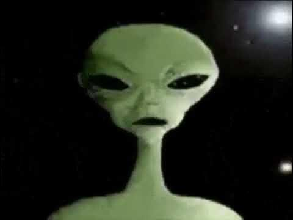
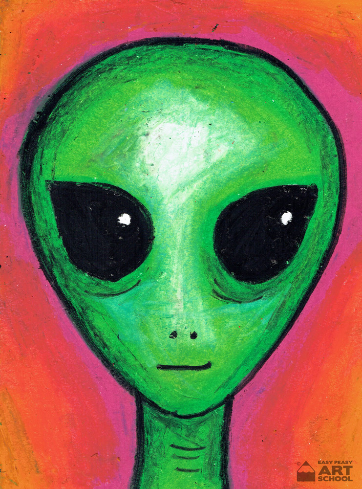

Are They Real????

Maybe!
Some say they have seen aliens! Most describe them as green and some people even take nice looking photos! As you can see from these two photos aliens come in a wide variety of shapes and sizes.
If you have seen an alien please contact me at 999-999-9999 and tell me about it! Please I really need more information to add to this page!

Alien Images
Sadly all the images in this have been created to simulate what actual aliens may look like!
If you have actual pictures of aliens please please please send me them so I can post them here and say I have actual 100% real pictures of aliens!